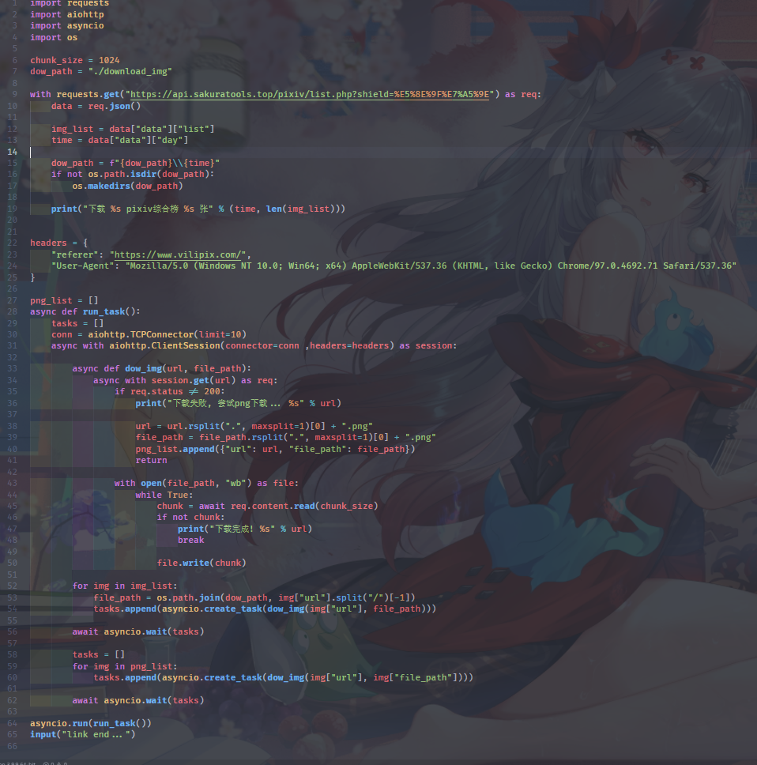

1.0 pixiv
抓取于 https://www.vilipix.com
数据0点更新均晚一天稳定榜单, 不包括r18
一次返回日周月三榜混合数据, 不重复抓取, 过了就没了
重点: 注意下载请求头携带 referer: https://www.vilipix.com/
重点: 务必处理下载时404, 把404图片改成 .png 图片就能正常下载
referer 和处理404都不能少, 没 referer 全部无法下载, 不处理404, 无法下载 png 图片
下载即用, 简单脚本一键下载数据, 保存在脚本目录, 速度很快!!!
脚本源码在下面, 完全开源放心使用
1.1 每日 日周月三榜混合数据
https://api.sakuratools.top/pixiv/list.php
请求方式: GET/POST
请求参数:
shield: 屏蔽标签, 多个用","分割
请求返回:
code: api 状态码
msg: api 信息 错误时可以返回错误信息
data -> day: 数据更新日期
data -> list: 图片榜单
data -> list -> id: 图片id
data -> list -> url: 图片原图 url
python demo:
此处演示代码同脚本, 完全异步, 速度很快
python demo code
1.2 获取今年可用日期列表
https://api.sakuratools.top/pixiv/date.php
请求方式: GET/POST
请求返回:
code: api 状态码
msg: api 信息 错误时可以返回错误信息
data: 一年榜单日期
1.3 从本站日周月三榜中随机图片
https://api.sakuratools.top/pixiv/random.php
请求方式: GET/POST
请求参数:
date: 指定从哪几天随机最多5天, 多个用","分割
默认从今天起的前5天, 可以先用获取今年可用日期列表的接口后从中选
count: 随机多少张返回, 最多100张, 默认10张
请求返回:
code: api 状态码
msg: api 信息 错误时可以返回错误信息
data -> date: 从哪几天随机
data -> list: 随机图片列表